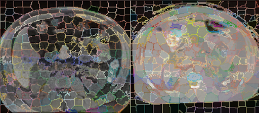
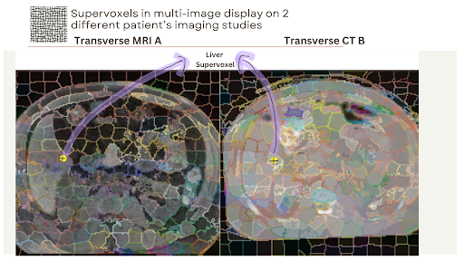

View all GSoC/JSoC Projects
This page is designed to improve discoverability of projects. You can, for example, search this page for specific keywords and find all of the relevant projects.
CliMA: A New Open-Source Climate Model Running on GPUs
Climate models are complex codes that simulate Earth's climate system (atmosphere, ocean, land, ice). These models demand immense computing power and present significant software engineering challenges, including managing massive datasets, ensuring numerical stability, optimizing performance, and coupling diverse components. The complexity and legacy nature of existing models hinder their ability to fully utilize modern computing infrastructure (GPUs, machine learning, etc.). The Climate Modeling Alliance is developing CliMA, a new climate model built in Julia and designed from the outset to leverage GPU acceleration and modern software engineering practices to overcome the limitations of traditional climate models.
ClimaExplorer: An Interactive Visualizer of Climate Model Outputs
Visualizing simulation output is crucial for both scientific understanding and outreach. This project involves developing ClimaExplorer, an interactive visualizer for the output of the CliMA Earth system model. ClimaExplorer will leverage the Makie ecosystem and web technologies, providing a user-friendly interface for exploring complex climate data. This will enable researchers to more easily analyze and interpret simulation results, accelerating scientific discovery. Furthermore, the web-based component will facilitate broader dissemination of results to a wider audience.
Desired Skills: Familiarity with front-end web development (HTML, JavaScript, and CSS), Julia, and Makie.
Difficulty: Medium
Duration 175 hours
Expected Results: ClimaExplorer, a new module for interactive visualization of simulation output (with tests and documentation).
Mentor: Gabriele Bozzola
Contact: Feel free to ask questions via email or Julia Slack (DM to Gabriele Bozzola).
Interested in other aspects of climate modeling in Julia but not this particular project? Get in touch—we have many more projects!
Compiler Projects – Summer of Code
There are a number of compiler projects that are currently being worked on. Please contact Jameson Nash for additional details and let us know what specifically interests you about this area of contribution. That way, we can tailor your project to better suit your interests and skillset.
Better debug information output for variables (175 hours)
We have part of the infrastructure in place for representing DWARF information for our variables, but only from limited places. We could do much better since there are numerous opportunities for improvement!
Expected Outcomes: Ability to see more variable, argument, and object details in gdb
Recommended Skills: Most of these projects involve algorithms work, requiring a willingness and interest in seeing how to integrate with a large system.
Difficulty: Medium
Mentors: Jameson Nash, Gabriel Baraldi
Improving test coverage (175 hours)
Code coverage reports very good coverage of all of the Julia Stdlib packages, but it's not complete. Additionally, the coverage tools themselves (–track-coverage and https://github.com/JuliaCI/Coverage.jl) could be further enhanced, such as to give better accuracy of statement coverage, or more precision. A successful project may combine a bit of both building code and finding faults in others' code.
Another related side-project might be to explore adding Type information to the coverage reports?
Recommended Skills: An eye for detail, a thrill for filing code issues, and the skill of breaking things.
Contact: Jameson Nash
Tensor network contraction order optimization and visualization – Summer of Code
OMEinsum.jl is a pure Julia package for tensor network computation, which has been used in various projects, including
GenericTensorNetworks.jl for solving combinatorial optimization problems,
YaoToEinsum.jl for simulating large scale quantum circuit and
TensorInference.jl for Bayesian inference.
Unlike other tensor contraction packages such as ITensors.jl and TensorOperations.jl, it is designed for large scale tensor networks with arbitrary topology. The key feature of OMEinsum.jl is that it can automatically optimize the contraction order of a tensor network. Related features are implemented in OMEinsumContractionOrders.jl.
We are looking for a student to work on the following tasks:
Implement a better contraction order optimizer based on Tamaki's algorithm.
Implement a hyper-graph visualization tool based on arXiv:2308.05043
Port the contraction order optimizers to TensorOperations.jl
Recommended skills: familiarity with tensor networks, graph theory and high performance computing.
Expected results:
new features added to the package
OMEinsumContractionOrders.jlalong with tests and relevant documentation.a new package about hyper-graph visualization, and relevant feature added to
OMEinsum.jl.a pull request to
TensorOperations.jlfor better contraction order optimization.
Mentors: Jin-Guo Liu, Jutho Haegeman and Lukas Devos
Project difficulty: Medium to Hard
Project length: 350 hrs
Contact: feel free to ask questions via email or the Julia slack (user name: JinGuo Liu).
Documentation tooling – Summer of Code
Documenter.jl
The Julia manual and the documentation for a large chunk of the ecosystem is generated using Documenter.jl – essentially a static site generator that integrates with Julia and its docsystem. There are tons of opportunities for improvements for anyone interested in working on the interface of Julia, documentation and various front-end technologies (web, LaTeX).
Here are some features or areas that are looking for contributions:
User-contributed notes and examples to documentation (e.g. backed by GitHub Discussions).
One-page-per-function documentation listings (prototype for main Julia manual). See JuliaDocs/Documenter.jl#2133.
JuliaSyntax-based code highlighter for Julia code that can be re-used for both the HTML and LaTeX/PDF output.
Rework Documenter's page layout and navigation. See JuliaDocs/Documenter.jl#2177.
Improve or rework Documenter's search index.
Work on any of the ideas that have been marked as plugins, as they offer self-contained features to work on.
If any of these sound interesting, please reach out to the mentors to ask for more details and to narrow down the project for a proposal. The possible projects vary in difficulty and size, depending on the project and the ultimate scope.
Recommended skills: Depends on the project, but the work would generally involved both Julia programming, but also basic web development (HTML, CSS, JS).
Mentors: Morten Piibeleht, Fredrik Ekre
Contact
Best way to reach out is to message in the #documentation channel on the JuliaLang Slack!
FastDifferentiation.jl – Summer of Code
FastDifferentiation.jl is a Julia package for computing very efficient symbolic derivatives of Julia functions and for compiling the derivatives into efficient executables. It can differentiate much larger expressions than other symbolic systems, such as Symbolics.jl, and the resulting derivatives are also much more efficient, rivaling hand computed derivatives in some cases (see the website for benchmark examples).
FastDifferentiation.jl also computes the exact sparsity patterns of Jacobians and Hessians (and any other order derivative) and detects common terms in derivatives of Rⁿ->Rᵐ functions for large n,m. As a consequence computation time of Jacobians generally scales sub-linearly as a function of n,m.
However, the current system has several weaknesses. It is not currently possible to differentiate through conditional expressions so many commonly used Julia functions cannot be differentiated. Derivatives of any order can be computed but orders above 3 or 4 become increasingly inefficient. These projects aim to address these weaknesse.
Add Conditionals to FastDifferentiation.jl
FastDifferentiation supports conditionals in function definitions but cannot yet compute derivatives of functions with conditionals:
julia> @variables x y
julia> f = if_else(x>y,x^2,y^2)
(if_else (x > y) (x ^ 2) (y ^ 2))
julia> derivative(f,x)
ERROR: Your expression contained a if_else expression. FastDifferentiation does not yet support differentiation through this functionThe goal of this project is to modify the derivative graph analysis code so that it detects conditional subgraphs and then generates run time code to evaluate conditionals and branches to correct derivative expressions.
Medium difficulty, 175 hours.
Recommended Skills: Julia programming experience, previous work with graph algorithms helpful but not required.
Expected Outcome: Well-tested and well-documented support for conditionals.
Mentor: BrianGuenter
Add higher order derivatives to FastDifferentiation.jl
FastDifferentiation.jl produces extremely efficient first derivatives. But, higher order derivatives become increasingly less efficient since they are computed by repeatedly applying the differentiation algorithm.
The fundamental cause of this behavior is that repeated higher order intermediate derivative terms are not detected and reused; instead they are computed from scratch. The goal of this project is to extend the FastDifferentiation algorithm to detect these common higher order terms and to reuse, rather than recompute them.
This will require a rewrite of the graph factorization code as well as some theoretical work to determine which higher order terms can be reused.
Hard, 350 hours.
Recommended Skills: Julia programming experience, previous work with graph algorithms helpful but not required. Understanding of Faa Di Bruno's and Leibniz's rule.
Expected Outcome: Well-tested and well-documented support for higher order derivatives.
Mentor: BrianGuenter
Integrate FastDifferentiation.jl into Symbolics.jl
FastDifferentiation.jl uses a new symbolic algorithm for automatic differentiation that can be orders of magnitude faster than conventional symbolic differentiation methods. Symoblics.jl could compute derivatives much faster using the FastDifferentiation algorithm. However implementation and data structure differences between the two systems make it difficult to add FastDifferentiation capabilities to Symbolics.jl.
For example, Symbolics.jl allows you to define a function and then to compute a symbolic derivative without defining . Adding this capability to FastDifferentiation.jl requires a change in the graph representation of derivatives.
The goal of this project is to first analyze the sources of the incompatibilities between the two systems and then to modify FastDifferentiation.jl, and perhaps Symbolics.jl, so that they interoperate.
See this page for a more detailed description of tasks.
Medium difficulty, 175 hours.
Recommended Skills: Julia programming experience, previous work with graph algorithms helpful but not required.
Expected Outcome: Well-tested and well-documented integration of FastDifferentiation into Symbolics.jl.
Mentor: BrianGuenter
Ferrite.jl - Finite Element Toolbox
Ferrite.jl is a Julia package providing the basic building blocks to develop finite element simulations of partial differential equations. The package provides extensive examples to start from and is designed as a compromise between simplicity and generality, trying to map finite element concepts 1:1 with the code in a low-level . Ferrite is actively used in teaching finite element to students at several universities across different countries (e.g. Ruhr-University Bochum and Chalmers University of Technology). Further infrastructure is provided in the form of different mesh parsers and a Julia based visualizer called FerriteViz.jl.
Below we provide a four of potential project ideas in Ferrite.jl. However, interested students should feel free to explore ideas they are interested in. Please contact any of the mentors listed below, or join the #ferrite-fem channel on the Julia slack to discuss. Projects in finite element visualization are also possible with FerriteViz.jl.
Fluid-Structure Interaction Example
Difficulty: Easy-Medium (depending on your specific background)
Project size: 150-300 hours
Problem: Ferrite.jl is designed with the possibility to define partial differential equations on subdomains. This makes it well-suited for interface-coupled multi-physics problems, as for example fluid-structure interaction problems. However, we currently do not have an example showing this capability in our documentation. We also do not provide all necessary utilities for interface-coupled problems.
Minimum goal: The minimal goal of this project is to create a functional and documented linear fluid-structure interaction example coupling linear elasticity with a stokes flow in a simple setup. The code should come with proper test coverage.
Extended goal: With this minimally functional example it is possible to extend the project into different directions, e.g. optimized solvers or nonlinear fluid-structure interaction.
Recommended skills:
Basic knowledge the finite element method
Basic knowledge about solids or fluids
The ability (or eagerness to learn) to write fast code
Mentors: Dennis Ogiermann and Fredrik Ekre
Investigation of Performant Assembly Strategies
Difficulty: Medium
Project size: 250-350 hours
Problem: Ferrite.jl has an outstanding performance in single-threaded finite element simulations due to elaborate elimination of redundant workloads. However, we recently identified that the way the single-threaded assembly works makes parallel assembly memory bound, rendering the implementation for "cheap" assembly loops not scalable on a wide range of systems. This problem will also translate to high-order schemes, where the single-threaded strategy as is prevents certain common optimization strategies (e.g. sum factorization).
Minimum goal: As a first step towards better parallel assembly performance it is the investion of different assembly strategies. Local and global matrix-free schemes are a possibility to explore here. The code has to be properly benchmarked and tested to identify different performance problems.
Extended goal: With this minimally functional example it is possible to extend the project into different directions, e.g. optimized matrix-free solvers or GPU assembly.
Recommended skills:
Basic knowledge the finite element method
Basic knowledge about benchmarking
The ability (or eagerness to learn) to write fast code
Mentors: Maximilian Köhler and Dennis Ogiermann
Simulations of Gaussian quantum information
Quantum harmonic oscillators are important modalities for quantum computation and quantum networking. A class of them, known as Gaussian bosonic systems, are efficient to simulate on a classical computer. Although such systems do not provide quantum computational advantage, they are present in most protocols and algorithms in continuous variable quantum information. Gabs.jl is a Julia library designed to enable fast simulations of Gaussian bosonic circuits and serve as a sandbox for quantum hardware and protocol design.
Efficient classical simulations of linear combinations of Gaussian quantum states
Non-Gaussian quantum states cannot be simulated via their first- and second-order statistical moments in the phase space representation like Gaussian states. However, there exist fast classical algorithms for simulating superpositions of Gaussian states, which are non-Gaussian in nature. This project involves implementing such algorithmic support for analyzing certain classes of non-Gaussian states.
Recommended skills: In-depth understanding of the quantum phase space formalism. This paper and also this paper are useful references.
Mentors: Andrew Kille and Stefan Krastanov.
Expected duration: 175 hours (but applicants can scope it as longer if they plan more extensive work)
Difficulty: Medium
Matrix product state representations of Gaussian and non-Gaussian quantum states
A matrix product state (MPS) is a valuable tensor network method for simulating quantum many-body systems. In particular, large continuous variable quantum systems that contain low entanglement can be simulated extremely fast with the MPS method. This project involves implementing support for MPS representations of Gaussian and non-Gaussian systems.
Recommended skills: In-depth understanding of the quantum phase space formalism. In addition, familiarity with tensor network methods and software such as ITensors.jl. For this project, this paper and also this paper are useful references.
Mentors: Andrew Kille and Stefan Krastanov.
Expected duration: 175 hours (but applicants can scope it as longer if they plan more extensive work)
Difficulty: Hard
Gaussian cluster states
Due to the technological maturity of quantum measurement schemes for photons, one-way quantum computation is an attractive approach for photonic quantum processing. In the continuous variable formalism, Gaussian cluster states serve as an important piece of the measurement-based quantum computation model. This project involves the creation of conversion tools between phase space representations of Gaussian bosonic systems and Gaussian cluster states in the graph formalism.
Recommended skills: Understanding of the quantum phase space formalism and the measurement-based quantum computation model. This review article and recent paper is a useful reference.
Mentors: Andrew Kille and Stefan Krastanov.
Expected duration: 175 hours (but applicants can scope it as longer if they plan more extensive work)
Difficulty: Easy
Graph Neural Networks
Graph Neural Networks (GNN) are deep learning models that are well adapted to data in the form of graphs with feature vectors associated with nodes and edges. GNNs are a growing area of research and find many applications in complex network analysis, relational reasoning, combinatorial optimization, molecule generation, and many other fields.
GraphNeuralNetworks.jl is a pure Julia package for GNNs equipped with many features. It implements common graph convolutional layers, with CUDA support and graph batching for fast parallel operations. There are several ways by which the package could be improved.
Adding models and examples
As part of the documentation and for bootstrapping new projects, we want to add fully worked-out examples and applications of graph neural networks. We can start with entry-level tutorials and progressively introduce the reader to more advanced features.
Duration: 175h.
Expected difficulty: easy.
Expected outcome: A few pedagogical and more advanced examples of graph neural network applications.
Adding graph datasets
Provide Julia-friendly wrappers for common graph datasets in MLDatasets.jl. Create convenient interfaces for the Julia ML and data ecosystem.
Duration: 175h.
Expected difficulty: easy.
Expected outcome: A large collection of graph datasets easily available to the Julia ecosystem.
Improving performance using sparse linear algebra
Many graph convolutional layers can be expressed as non-materializing algebraic operations involving the adjacency matrix instead of the slower and more memory-consuming gather/scatter mechanism. We aim at extending as far as possible and in a gpu-friendly way these fused implementation. The project will involve fixing some outstanding issues in CUDA.jl that are blocking sparse adjacency matrix support on GPU.
Duration: 350h.
Expected difficulty: hard.
Expected outcome: A noticeable performance increase for many graph convolutional operations.
Support for AMGDPU and Apple Silicon
We currently support scatter/gather operation only on CPU and CUDA hardware. We aim to extend this to AMDGPU and Apple Silicon leveraging KernelAbstractions.jl, AMDGPU.jl, and Metal.jl.
Duration: 175h.
Expected difficulty: medium.
Expected outcome: Graph convolution speedup for AMD GPU and Apple hardware, performance roughly on par with CUDA.
Mentors
Carlo Lucibello (author of GraphNeuralNetworks.jl). Feel free to contact me on the Julia Slack Workspace or by opening an issue in the GitHub repo.
GPU Projects
JuliaGPU provides a suite of packages for programming GPUs in Julia. We have support for AMD, NVIDIA and Intel GPUs through various backends, unified by high-level array abstractions and a common programming model based on kernel programming.
Improving GPU Stack Portability
Difficulty: Medium
Duration: 175 or 350 hours (the scope of functionality to port can be adjusted accordingly)
Description: The Julia GPU stack consists of several layers, from low-level vendor-specific packages like CUDA.jl to high-level abstractions like GPUArrays.jl. While the high-level packages aim to be vendor-agnostic, many optimized operations are still implemented in vendor-specific ways. This project aims to improve portability by moving these implementations to GPUArrays.jl using KernelAbstractions.jl.
The project will involve:
Identifying vendor-specific kernel implementations in packages like CUDA.jl
Porting these kernels to KernelAbstractions.jl in GPUArrays.jl
Improving KernelAbstractions.jl where needed to support these kernels
Ensuring performance remains competitive with vendor-specific implementations
Adding tests to verify correctness across different GPU backends
Required Skills:
Experience with Julia programming
Familiarity with GPU programming concepts
Experience with GPU programming in Julia is a plus
Understanding of performance optimization
Expected Results: A set of optimized GPU kernels in GPUArrays.jl that are vendor-agnostic and performant across different GPU backends. This will improve the portability of the Julia GPU stack and make it easier to support new GPU architectures.
Mentors: Tim Besard, Valentin Churavy
Herb.jl Projects

Wouldn’t it be great if Julia would program itself? Tell it what you want, Julia magic happens, and you get your program directly. We introduce Herb.jl, a library written in Julia that gets us a step closer to our big goal. Herb.jl is a library for program synthesis: The task of automatically generating programs from a given specification. Here, “a program” could be anything, from an actual Python program over moves in chess to the synthesis of biochemical molecules. There are numerous works on program synthesis, all speaking a different language in code and terminology. We want to make developing, comparing, and applying ideas in program synthesis easier.
Herb’s main goal is, therefore, two-fold. First, we aim to provide a toolbox for 1. developing new program synthesizers or 2. easily re-implementing existing ones. Second, we aim to unify many different flavors of program synthesis under a joint framework, making program synthesizers easy to use on new problems.
If you have any questions or ideas, please contact Tilman.
Project 1: Optimizations
Difficulty: Medium
Estimated Duration: 350 hours
Project Overview: Herb.jl has an outstanding performance in enumerating programs. Every generated program also needs to be evaluated, making evaluation the main bottleneck in finding a suitable program. We want to improve this aspect by leveraging various well-engineered projects from the Julia community.
First, we have so far lessened the burden of evaluation by developing custom interpreters. This is time-consuming and error-prone, so we would like to avoid it. The core challenge here is that the explore programs don't have a fixed structure and are constructed during synthesis; therefore, they cannot be compiled ahead of time. The Julia package DynamicExpressions.jl is developed to overcome this exact problem, allowing for "ridiculously fast symbolic expressions". We would like to integrate DynamicExpressions.jl into our ecosystem and get a faster evaluation of Julia programs for free.
Second, Herb is limited to Julia so far. Our goal is, however, to make Herb a language agnostic program synthesis library. We would like to extend Herb with connections to other interpreters for common languages like Python, Java, Prolog, et cetera. This would make it possible for Herb users to use any programming language that fits their needs.
Third, another crucial aspect of every program synthesis engine is the construction of candidate programs. State-of-the-art program synthesis tools, like CVC5, have invested significant time into optimizing the program construction step, resulting in significantly improved performance. We want to map these ideas into Herb.
Minimum goal: Connect DynamicExpressions.jl to Herb.jl. This involves implementing the expression interface from DynamicExpressions.jl for Herb.jl’s expression tree formulation.
Extended goal: Add support for at least one non-Julia program interpreter or add tricks from CVC5 to Herb.
Recommended skills:
basic knowledge of data structures
interest in program optimization
the eagerness to learn to write and optimize code
Mentors: Reuben Gardos-Reid, Tilman Hinnerichs and Sebastijan Dumancic
Some literature:
The Program Synthesis book (by Gulwani et al., link
CVC4SY paper: link
DynamicExpression.jl: linkOur website: link
Project 2: HerbLearn Integration
Difficulty: Medium
Estimated Duration: 350h
Problem description: Neurally-guided program synthesizers form a popular class of synthesizers, which learn a heuristic to guide program generation. Following Herb's paradigm to unify the field, we want to reach the same goal for this sub-field. Specifically, learning guiding policies comprise the same building blocks of 1. program sampling, 2. program-data-encoding, 3. policy learning with respect to a loss function, and 4. deploying that strategy.
In this project, we want to implement these building blocks to allow researchers to reuse the modules directly. To guide this project, we implemented a template structure to follow and extend.
Minimum goal: Implement a naive but modular strategy for all four steps. To allow for easy integration of with existing models, we aim to implement the machine learning part using Flux.jl.
Extended goal: The extended goal is to deepen one or more of these modules that fit the student's interests. The literature provides numerous ideas on how to make all four steps smarter individually. Concretely, this could include
smarter program-sampling,
different program encoding strategies from the literature,
implementing and applying different loss functions, and
incorporating this with different search procedures.
Recommended skills:
Basic knowledge of machine learning principles (neural networks, model training, ...)
Preferably prior experiences with Flux.jl
Mentors: Tilman Hinnerichs, Reuben Gardos-Reid and Sebastijan Dumancic
Some literature:
The Program Synthesis book (by Gulwani et al., link
Our website: https://herb-ai.github.io/
BUSTLE: Bottom-up Program Synthesis through learning-guided exploration: link
DeepCoder link
DreamCoder link
High Performance and Parallel Computing Projects – Summer of Code
Julia is emerging as a serious tool for technical computing and is ideally suited for the ever-growing needs of big data analytics. This set of proposed projects addresses specific areas for improvement in analytics algorithms and distributed data management.
Distributed Training
Difficulty: Hard (350h)
Add a distributed training API for Flux models built on top of Dagger.jl. More detailed milestones include building Dagger.jl abstractions for UCX.jl, then building tools to map Flux models into data parallel Dagger DAGs. The final result should demonstrate a Flux model training with multiple devices in parallel via the Dagger.jl APIs. A stretch goal will include mapping operations with a model to a DAG to facilitate model parallelism as well.
There are projects now that host the building blocks: DaggerFlux.jl and Distributed Data Parallel Training which can serve as jumping off points.
Skills: Familiarity with UCX, representing execution models as DAGs, Flux.jl, CUDA.jl and data/model parallelism in machine learning
Mentors: Julian Samaroo, and Dhairya Gandhi
Optimizing GPU scheduler in Dagger.jl with Multistreams
Difficulty: Hard (350h)
This project aims to explore and enhance GPU performance by integrating Dagger.jl, Julia’s high-performance parallel computing framework, with GPU multistream capabilities. Dagger.jl enables task-based parallelism, allowing complex computations to be broken down into smaller, manageable tasks that can be efficiently scheduled across computing resources. By incorporating GPU multistreams, students will investigate how multiple streams can be used to overlap data transfers with kernel executions, enabling concurrent operations on the GPU. This overlapping reduces idle times, as data movement and computations occur simultaneously, thus maximizing GPU resource utilization. The project will focus on designing and implementing parallel workflows where independent tasks are executed concurrently, leveraging Dagger’s dynamic task scheduling and GPU’s ability to manage multiple streams effectively. Students will experiment with different workload patterns, measure performance improvements, and analyze the impact of multistream execution on throughput and latency. Through performance benchmarking and optimization, this project will provide hands-on experience in GPU programming, parallel algorithm design, and high-performance computing, equipping students with valuable skills for tackling real-world scientific and data-intensive applications.
There are projects now that host the building blocks: DaggerGPU.jl and Dagger.jl which can serve as jumping off points.
Skills: Familiarity with GPU, representing execution models as DAGs, CUDA.jl
Mentors: Julian Samaroo, and Rabab Alomairy
Distributed Linear Algebra
Difficulty: Hard (350h)
Add distributed linear algebra capabilities to Dagger.jl. This project will involve building abstractions for distributed linear algebra operations, such as matrix multiplication, matrix factorizations, and different data distribution schemes (cyclic, block-cyclic, 2D, 3D). The student will build on top of Dagger.jl to enable distributed linear algebra operations across multiple devices. The final result should demonstrate a linear algebra operation running across multiple devices in parallel via the Dagger.jl APIs.
Skills: Familiarity with distributed computing, numerical linear algebra, Dagger.jl
Mentors: Felipe Tomé, and Rabab Alomairy
Optimizing MPI integration in Dagger.jl
Difficulty: Hard (350h)
This project aims to enhance the performance of the already implemented MPI integration in Dagger.jl. The student will investigate and optimize the communication patterns between ranks, focusing on reducing communication overhead and latency. The project will involve profiling and benchmarking different communication schemes, such as point-to-point, collective and Random Memory Access (RMA) strategies, and analyzing their impact on performance. Through performance benchmarking and optimization, this project will provide hands-on experience in parallel algorithm design and , distributed computing, equipping students with valuable skills for tackling real-world scientific and data-intensive applications.
Skills: Familiarity with MPI, representing execution models as DAGs, Dagger.jl, RMA
Mentors: Felipe Tomé, and Julian Samaroo
Dynamical systems, complex systems & nonlinear dynamics – Summer of Code
Agents.jl
Difficulty: Medium to Hard.
Length: 175 to 350 hours depending on the project.
Agents.jl is a pure Julia framework for agent-based modeling (ABM). It has an extensive list of features, excellent performance and is easy to learn, use, and extend. Comparisons with other popular frameworks written in Python or Java (NetLOGO, MASON, Mesa), show that Agents.jl outperforms all of them in computational speed, list of features and usability.
In this project, contributors will be paired with lead developers of Agents.jl to improve Agents.jl with more features, better performance, and overall higher polish. We are open to discuss with potential candidate a project description and outline for it!
Possible features to implement are:
GPU and/or HPC support in Agents.jl by integrating existing ABM packages (Vanaha.jl or CellBasedModels.jl) into Agents.jl API.
Integrating Agents.jl with ReinforcementLearning.jl
Differentiation / parameter fitting of ABMs in Agents.jl by utilizing StochasticAD.jl or similar frameworks.
Pre-requisite: Having already contributed to a Julia package either in JuliaDynamics or of sufficient relevance to JuliaDynamics.
Recommended Skills: Familiarity with agent based modelling, Agents.jl and Julia's Type System, and achieving high-end computational performance within Julia. Research background in complex systems, sociology, agent based modelling, or nonlinear dynamics is not required but would be advantageous.
Expected Results: Well-documented, well-tested useful new features for Agents.jl.
Mentors: George Datseris.
DynamicalSystems.jl
Difficulty: Easy to Medium to Hard, depending on the project.
Length: 175 to 350 hours, depending on the project.
DynamicalSystems.jl is an award-winning Julia software library for dynamical systems, nonlinear dynamics, deterministic chaos, and nonlinear time series analysis. It has an impressive list of features, but one can never have enough. In this project, contributors will be able to enrich DynamicalSystems.jl with new algorithms and enrich their knowledge of nonlinear dynamics and computer-assisted exploration of complex systems.
Here is a list of high-impact, Hard (350 hours) projects that we want to prioritize.
Local and global continuation in dynamical systems combined in one. This will be a ground-breaking feature, combining cutting edge research on multistable dynamical systems with the established bifurcation-continuation analysis.
Other than that, we do not outline more possible projects here, and instead we invite interested candidates to explore the documentation and list of open features of any of the subpackages of DynamicalSystems.jl. Then the candidates can reach out to one of the developers of the subpackage to devise a project outline. We strongly welcome candidates that already have potential project ideas in mind already irrespectively of the open list of issues.
Pre-requisite: Having already contributed to a Julia package either in JuliaDynamics or of sufficient relevance to JuliaDynamics.
Recommended Skills: Familiarity with nonlinear dynamics and/or differential equations and/or timeseries analysis based on the Julia language.
Expected Results: Well-documented, well-tested new algorithms for DynamicalSystems.jl.
Mentors: George Datseris
JuliaGenAI Projects – Summer of Code

JuliaGenAI is an organization focused on advancing Generative AI research and looking for its applications within the Julia programming language ecosystem. Our community comprises AI researchers, developers, and enthusiasts passionate about pushing the boundaries of Generative AI using Julia's high-performance capabilities. We strive to create innovative tools and solutions that leverage the unique strengths of Julia in handling complex AI challenges.
IMPORTANT: There will not be any projects mentored this year by Jan Siml (svilupp) and Cameron Pfiffer (cpfiffer) due to time constraints, but we will be happy to answer any questions you might have - see below how to contact us.
There is a high overlap with other organizations, you should definitely check out these projects:
Projects with MLJ.jl - For more traditional machine learning projects
Projects in Reinforcement Learning - For projects around AlphaZero.jl
Projects with FluxML - For projects around Flux.jl, the backbone of Julia's deep learning ecosystem
How to Contact Us
Probably the easiest way is to join our JuliaLang Slack and join the #generative-ai channel. You can also reach out to us on Julia Zulip or post a GitHub Issue on our website JuliaGenAI.
JuliaHealth Projects – Summer of Code
JuliaHealth is an organization dedicated to improving healthcare by promoting open-source technologies and data standards. Our community is made up of researchers, data scientists, software developers, and healthcare professionals who are passionate about using technology to improve patient outcomes and promote data-driven decision-making. We believe that by working together and sharing our knowledge and expertise, we can create powerful tools and solutions that have the potential to transform healthcare.
Observational Health Subecosystem Projects
Project 1: Supporting Patient Level Prediction Pipelines within JuliaHealth
Description: Patient level prediction (PLP) is an important area of research in observational health research that involves using patient data to predict outcomes such as disease progression, response to treatment, and hospital readmissions. JuliaHealth is interested in developing supportive tooling for PLP that utilizes historical patient data, such as patient medical claims or electronic health records, that follow the OMOP Common Data Model (OMOP CDM), a widely used data standard that allows researchers to analyze large, heterogeneous healthcare datasets in a consistent and efficient manner. For this project, we are looking for students interested in developing supportive PLP tooling within JuliaHealth.
Mentor: Jacob S. Zelko (aka TheCedarPrince) [email: jacobszelko@gmail.com]
Difficulty: Medium
Duration: 175 hours
Suggested Skills and Background:
Experience with Julia
Exposure to machine learning concepts and ideas
Familiarity with some of the following Julia packages would be a strong asset:
DataFrames.jl
OMOPCDMCohortCreator.jl
MLJ.jl
ModelingToolkit.jl
Comfort with the OMOP Common Data Model (or a willingness to learn)
Outcomes:
This project will be very experimental and exploratory in nature. To constrain the expectations for this project, here is a possible approach students will follow while working on this project:
Review existing literature on approaches to PLP
Familiarize oneself with tools for machine learning and prediction within the Julia ecosystem
Develop infrastructure needed for doing PLP within the JuliaHealth ecosystem such as:
Consistent DataFrames.jl interface
Data harmonization methods
Sampling considerations for large scale patient data
Document findings and novel software
In whatever functionality that gets developed for tools within JuliaHealth, it will also be expected for students to contribute to the existing package documentation to highlight how new features can be used. Another perspective of this project is that its intended goal is to provide the foundational support needed within JuliaHealth to better accommodate multiple modalities of data available within public health settings. The long term goal is to use the development of foundational tooling with JuliaHealth to better support patient level prediction workflows across observational health data and additional information such as survey data, social determinants of health data, and climate data.
Additionally, depending on the success of the package, there is a potential to run experiments on actual patient data to generate actual patient population insights based on a chosen research question. This could possibly turn into a separate research paper, conference submission, or poster submission. Whatever may occur in this situation will be supported by project mentors.
Medical Imaging Subecosystem Projects
Julia Radiomics
Project Title: Julia Radiomics Difficulty: Medium Duration: 375 hours (22 Weeks) Mentor: Jakub Mitura
Description
Radiomic features are quantitative metrics extracted from medical images using data-characterization algorithms. These features capture tissue and lesion characteristics, such as heterogeneity and shape, which may provide valuable insights beyond what the naked eye can perceive.
This project aims to implement algorithms for extracting radiomic features from 2D and 3D medical images, similar to PyRadiomics, using Julia. The implementation will include Gray Level Co-occurrence Matrix (GLCM), Gray Level Size Zone Matrix (GLSZM), Gray Level Run Length Matrix (GLRM), Neighborhood Gray Tone Difference Matrix (NGTDM), and Gray Level Dependence Matrix (GLDM). The extracted features will be validated against PyRadiomics and applied to medical imaging data, such as the AutoPET dataset, to demonstrate the methodology.
Deliverables
Implementation of Radiomic Feature Extraction Algorithms
First Group: GLCM, GLSZM, GLRM
Second Group: NGTDM, GLDM
Feature Extraction Pipeline
Extract all features from segmented lesions in PET and CT modalities.
Use MedImages.jl for image handling.
Leverage KernelAbstractions.jl for performance optimization where possible.
Validation
Compare extracted features against PyRadiomics outputs.
Ensure statistical equivalence in extracted features.
Final Report & Code Repository
Methodology, results, benchmarking.
Public GitHub repository under an MIT license.
Success Criteria and Timeline
Literature Review and Setup (3 Weeks)
Literature Review and Setup (3 Weeks)
Review PyRadiomics documentation, MedImages.jl, KernelAbstractions.jl APIs, and AutoPET dataset structure.
Success Criteria: Understanding of feature definitions, dataset access, and GPU kernel design.
Feature Implementation (6 Weeks)
Feature Implementation (6 Weeks)
Implement GLCM, GLSZM, GLRM, NGTDM, and GLDM matrices.
Validate outputs against PyRadiomics (>90% similarity in unit tests).
Success Criteria: GPU-accelerated implementation for 3D volumes.
Feature Extraction Pipeline (4 Weeks)
Feature Extraction Pipeline (4 Weeks)
Build a pipeline to process AutoPET lesions using MedImages.jl.
Success Criteria: Extraction of 100+ features per lesion, support for batch processing.
Validation (3 Weeks)
Validation (3 Weeks)
Compare Julia feature extraction results with PyRadiomics.
Success Criteria: Statistical equivalence (e.g., t-test p > 0.05), with documented discrepancies <5%.
Documentation and Packaging (4 Weeks)
Documentation and Packaging (4 Weeks)
Write documentation for the Julia-based radiomics library.
Write automated tests for the proper functioning of the library.
Register the package in the Julia package registry.
Success Criteria: The final working library is successfully available in the Julia ecosystem.
Reporting (2 Weeks)
Reporting (2 Weeks)
Document methodology, results, and benchmarking.
Success Criteria: Reproducible code, Jupyter notebooks, open-source repository.
Stretch Goals
Implementation of additional radiomic features such as:
Wavelet Features (Transform-based texture analysis)
Fractal Analysis (Estimating complexity in medical images)
Laplacian of Gaussian (LoG) Features (Edge detection-based feature extraction)
Optimized parallel computation using GPU acceleration in KernelAbstractions.jl.
Implementation of an interactive Julia-based visualization tool for extracted radiomic features.
Clarification
This implementation will be done entirely in Julia, and Python will not be used in any part of the implementation. Any cross-validation with PyRadiomics is purely for benchmarking purposes.
Importance and Impact
Technical Impact
Julia Ecosystem Growth: First native Radiomics toolkit in Julia.
GPU Acceleration: Utilizes KernelAbstractions.jl for efficient 3D feature extraction.
Reproducibility: Open-source implementation ensures transparency in radiomics research.
Clinical Impact
Cancer Differentiation: Model insights may aid in non-invasive cancer subtyping.
Standardization: Cross-tool validation enhances study comparability across different platforms.
Community Impact
Foundation for Future Work: Enables Julia-based radiomics pipelines for projects like TCIA.
Educational Value: Demonstrates GPU-accelerated medical image processing in Julia for researchers and students.
References
Radiomics Research: Various studies on the clinical relevance of radiomics in medical imaging.
Kumar, V., et al. "Radiomics: the process and the challenges." Magnetic Resonance Imaging, 2012.
Gillies, R.J., et al. "Radiomics: images are more than pictures, they are data." Nature Reviews Cancer, 2016.
Lambin, P., et al. "Radiomics: extracting more information from medical images using advanced feature analysis." European Journal of Cancer, 2012.
Enhancing MedPipe3D: Building a Comprehensive Medical Imaging Pipeline in Julia
Description
MedPipe3D was created to improve integration between other parts of the small ecosystem (MedEye3D, MedEval3D, and MedImage). Currently, it needs to be expanded and adapted to serve as the basis for a fully functional medical imaging pipeline.
Mentor: Jakub Mitura [email: jakub.mitura14@gmail.com]
Project Difficulty and Timeline
Difficulty: Medium Duration: 12 weeks
Required Skills and Background
Strong knowledge of the Julia programming language is required.
Experience with the following Julia packages is highly desirable:
MedPipe3D.jl
MedEye3D.jl
MedEval3D.jl
MedImage.jl
Familiarity with the following packages would be a valuable asset:
Lux.jl
TensorBoard
Logging.jl
Potential Outcomes
Implement comprehensive logging with TensorBoard Integration and Error and Warning Logs with Logging.jl for better tracking and debugging.
Improve the performance of augmentations.
Enable per-layer memory usage inspection of Lux models.
Enable gradient checkpointing of chosen layers to save memory.
Support loading tabular data (e.g., clinical data) together with the image into the supplied model.
Enhance documentation with in-depth tutorial, code examples, and a refined README for easy onboarding.
This set of changes, although time-consuming to implement, should not pose a significant issue to anyone with experience with the Julia programming language. Each feature will be implemented using existing Julia libraries and frameworks where possible. However, implementing these changes will be a huge step in making the Julia language a good alternative to Python for developing end-to-end medical imaging segmentation algorithms.
Success Criteria and Time Needed
Logging: Implement logging to track the progress and debug issues - 2 weeks.
Performance Improvements: Optimize the performance of augmentations to ensure efficient processing - 2 weeks.
Memory Usage Inspection: Enable per-layer memory usage inspection of Lux models to monitor and optimize memory consumption - 2 weeks.
Gradient Checkpointing: Enable gradient checkpointing of chosen layers to save memory during training - 4 weeks.
Tabular Data Support: Support loading tabular data (e.g., clinical data) together with the image into the supplied model - 1 week.
Documentation: Improve documentation to provide clear instructions and examples for users - 1 week.
Total estimated time: 12 weeks.
Why Implementation of These Features is Important
Implementing these features is crucial for advancing medical imaging technology. Enhanced logging with TensorBoard integration will allow for better insight into model training. Performance improvements ensure reliable and efficient processing of large datasets. Improved documentation and memory management make the tools more accessible and usable for medical professionals, facilitating better integration into clinical workflows. Supporting tabular data alongside imaging allows for comprehensive analysis, combining clinical and imaging data to improve diagnostic accuracy and patient outcomes.
For each point, the mentor will also supply the person responsible for implementation with examples of required functionalities in Python or will point to the Julia libraries already implementing it (that just need to be integrated).
Project Title: A Digital Twin Approach for Advanced Supervoxel Visualization for Multi-Image View in Medical Imaging
General Idea
This project aims to develop visualization and interaction software for advanced supervoxel visualization on multi-image views. Building on the experiences from MedEye3D, the project will focus on creating a tool that allows users to interact with and visualize supervoxels across different imaging modalities (e.g., CT and MRI) simultaneously. The software will highlight corresponding supervoxels in different images when the user hovers over them, facilitating reliable analysis even in the presence of natural elastic deformations.
Potential Outcomes
Enhanced Visualization: A software tool that provides side-by-side views of different imaging studies, displaying supervoxel borders and highlighting corresponding supervoxels across images.
Improved Interaction: An interactive interface allowing users to manually correct supervoxel associations by clicking and highlighting supervoxels in both images.
Control Points Annotation: Support for annotating and displaying control points to aid in registration and user orientation.
User Feedback Integration: Mechanisms for users to indicate incorrect supervoxel associations, improving the reliability of the tool.
Success Criteria and Time Needed
Software Development: [10 Weeks]
Develop the core visualization tool with side-by-side image views.
Implement supervoxel border display and highlighting functionality.
Integrate control points annotation and display features.
User Interaction Features: [6 Weeks]
Develop interactive features for manual correction of supervoxel associations.
Implement user feedback mechanisms for indicating incorrect associations.
Testing and Validation: [2 Weeks]
Conduct extensive testing with sample medical imaging data.
Validate the tool's accuracy and reliability in highlighting corresponding supervoxels.
Documentation and User Training: [2 Weeks]
Create comprehensive documentation for the software.
Develop training materials and conduct user training sessions.
Final Review and Deployment: [2 Weeks]
Review the project outcomes and make necessary adjustments.
Deploy the software for use by the scientific community.
The total estimated time for the project is approximately 22 weeks. Success will be measured by the tool's ability to accurately highlight corresponding supervoxels, ease of use, and positive feedback from users in the medical imaging community.
Technical Requirements and Expected Expertise
Strong programming skills in Julia/C++
Experience with medical imaging libraries (ITK, SimpleITK, NIfTI)
Familiarity with GUI development (preferably ModernGL.jl)
Understanding of 3D visualization techniques
Basic knowledge of medical image processing concepts
Experience with version control (Git)
Tools and Technologies
Primary Language: Julia
GUI Framework: ModernGL.jl/ Vulkan.jl
Image Processing: ITK/SimpleITK
Visualization: OpenGL
Building upon: MedEye3D framework
User Interaction Examples
Hovering Over Supervoxels: When the user hovers the mouse over a supervoxel in one image (e.g., CT scan), the corresponding supervoxel in the other image (e.g., MRI scan) will be highlighted automatically.
Manual Correction: If the user identifies an incorrect supervoxel association, they can click on the supervoxel in one image to freeze it, then manually find and click the correct supervoxel in the other image to establish the correct association.
Control Points: Users can annotate control points by clicking on corresponding anatomical areas in both images. These points will be saved and displayed to assist in image registration and orientation.
Importance and Impact
This project is significant because it addresses the challenges of non-rigid registration in medical imaging, which is crucial for accurate diagnosis and treatment planning. By providing a reliable tool for visualizing and interacting with supervoxels across different imaging modalities, the project has the potential to:
Enhance the accuracy of image registration and subsequent measurements.
Reduce the time required for manual registration by radiologists and nuclear medicine specialists.
Enable the development of new algorithms and methods in the medical imaging field.
Improve clinical decision-making by providing more reliable imaging data.
While various medical image visualization tools exist, there is currently no software solution that specifically addresses supervoxel-based visualization across multiple imaging modalities with interactive correction capabilities. This project builds upon MedEye3D as an independent extension, enhancing its capabilities with new features for supervoxel visualization and interaction.
Visual Examples
2 Different Patient's MRI and CT Studies on Transversal plane with supervoxels

Highlighting the same anatomical region in both images with supervoxel display

Overall, this project aims to contribute to the advancement of medical imaging technology, ultimately benefiting both the scientific community and patient care. Additionally, it will serve as a support tool for digital twin projects, enhancing the reliability of image registration and subsequent measurements.
Music data analysis
JuliaMusic is an organization providing packages and functionalities that allow analyzing the properties of music performances.
MIDIfication of music from wave files
Difficulty: Medium.
Length: 350 hours.
It is easy to analyze timing and intensity fluctuations in music that is the form of MIDI data. This format is already digitalized, and packages such as MIDI.jl and MusicManipulations.jl allow for seamless data processing. But arguably the most interesting kind of music to analyze is the live one. Live music performances are recorded in wave formats. Some algorithms exist that can detect the "onsets" of music hits, but they are typically focused only on the timing information and hence forfeit detecting e.g., the intensity of the played note. Plus, there are very few code implementations online for this problem, almost all of which are old and unmaintained. We would like to implement an algorithm in MusicProcessing.jl that given a recording of a single instrument, it can "MIDIfy" it, which means to digitalize it into the MIDI format.
Recommended Skills: Background in music, familiarity with digital signal processing.
Expected results: A well-tested, well-documented function midify in MusicProcessing.jl.
Mentors: George Datseris.
JuliaReach
JuliaReach is the Julia ecosystem for reachability computations of dynamical systems. Application domains of set-based reachability include formal verification, controller synthesis and estimation under uncertain model parameters or inputs. For further context reach us on the JuliaReach zulip stream. You may also refer to the review article Set Propagation Techniques for Reachability Analysis.
Efficient symbolic-numeric set computations
Difficulty: Medium.
Description. LazySets is the core library of JuliaReach. It provides ways to symbolically compute with geometric sets, with a focus on lazy set representations and efficient high-dimensional processing. The library has been described in the article LazySets.jl: Scalable Symbolic-Numeric Set Computations.
The main interest in this project is to implement algorithms that leverage the structure of the sets. Typical examples include polytopes and zonotopes (convex), polynomial zonotopes and Taylor models (non-convex) to name a few.
Expected Results. The goal is to implement certain efficient state-of-the-art algorithms from the literature. The code is to be documented, tested, and evaluated in benchmarks. Specific tasks may include (to be driven by the interets of the candidate): efficient vertex enumeration of zonotopes; operations on polynomial zonotopes; operations on zonotope bundles; efficient disjointness checks between different set types; complex zonotopes.
Expected Length. 175 hours.
Recommended Skills. Familiarity with Julia and Git/GitHub is mandatory. Familiarity with LazySets is recommended. Basic knowledge of geometric terminology is appreciated but not required.
Mentors: Marcelo Forets, Christian Schilling.
Reachability with sparse polynomial zonotopes
Difficulty: Medium.
Description. Sparse polynomial zonotopes are a new non-convex set representation that are well-suited for reachability analysis of nonlinear dynamical systems. This project is a continuation of GSoC'2022 - Reachability with sparse polynomial zonotopes, which implemented the basics in LazySets.
Expected Results. It is expected to add efficient Julia implementations of a reachability algorithm for dynamical systems in ReachabilityAnalysis which leverages polynomial zonotopes. A successful project should:
Replicate the results from the article [Reachability Analysis for Linear Systems with Uncertain Parameters using Polynomial Zonotopes
](https://dl.acm.org/doi/abs/10.1145/3575870.3587130).
The code shall be documented, tested, and evaluated extensively in benchmarks.
For ambitious candidates it is possible to draw connections with neural-network control systems as implemented in ClosedLoopReachability.jl.
Expected Length. 175 hours.
Recommended Skills. Familiarity with Julia and Git/GitHub is mandatory. Familiarity with the mentioned Julia packages is appreciated but not required. The project does not require theoretical contributions, but it requires reading a research literature, hence a certain level of academic experience is recommended.
Literature and related packages. This video explains the concept of polynomial zonotopes (slides here). The relevant theory is described in this research article. There exists a Matlab implementation in CORA (the implementation of polynomial zonotopes can be found in this folder).
Mentors: Marcelo Forets, Christian Schilling.
Improving the hybrid systems reachability API
Difficulty: Medium.
Description. ReachabilityAnalysis is a Julia library for set propagation of dynamical systems. One of the main aims is to handle systems with mixed discrete-continuous behaviors (known as hybrid systems in the literature). This project will focus on enhancing the capabilities of the library and overall improvement of the ecosystem for users.
Expected Results. Specific tasks may include: problem-specific heuristics for hybrid systems; API for time-varying input sets; flowpipe underapproximations. The code is to be documented, tested, and evaluated in benchmarks. Integration with ModelingToolkit.jl can also be considered if there is interest.
Expected Length. 175 hours.
Recommended Skills. Familiarity with Julia and Git/GitHub is mandatory. Familiarity with LazySets and ReachabilityAnalysis is welcome but not required.
Mentors: Marcelo Forets, Christian Schilling.
Machine Learning Projects
Note: FluxML participates as a NumFOCUS sub-organization. Head to the FluxML GSoC page for their idea list.
Reinforcement Learning Environments
Time: 175h
Develop a series of reinforcement learning environments, in the spirit of the OpenAI Gym. Although we have wrappers for the gym available, it is hard to install (due to the Python dependency) and, since it's written in Python and C code, we can't do more interesting things with it (such as differentiate through the environments).
Expected Outcome
A pure-Julia version of selected environments that supports a similar API and visualisation options would be valuable to anyone doing RL with Flux.
Mentors: Dhairya Gandhi.
Molecular Simulation
Much of science can be explained by the movement and interaction of molecules. Molecular dynamics (MD) is a computational technique used to explore these phenomena, from noble gases to biological macromolecules. Molly.jl is a pure Julia package for MD, and for the simulation of physical systems more broadly. The package is currently under development with a focus on proteins and differentiable molecular simulation. There are a number of ways that the package could be improved:
Machine learning potentials (duration: 175h, expected difficulty: easy to medium): in the last few years machine learning potentials have been improved significantly. Models such as ANI, ACE, NequIP and Allegro can be added to Molly.
Better GPU performance (duration: 175h, expected difficulty: medium): custom GPU kernels can be written to significantly speed up molecular simulation and make the performance of Molly comparable to mature software.
Constraint algorithms (duration: 175h, expected difficulty: medium): many simulations keep fast degrees of freedom such as bond lengths and bond angles fixed using approaches such as SHAKE, RATTLE and SETTLE. A fast implementation of these algorithms would be a valuable contribution.
Electrostatic summation (duration: 175h, expected difficulty: medium to hard): methods such as particle-mesh Ewald (PME) are in wide use for molecular simulation. Developing fast, flexible implementations and exploring compatibility with GPU acceleration and automatic differentiation would be an important contribution.
Recommended skills: familiarity with computational chemistry, structural bioinformatics or simulating physical systems.
Expected results: new features added to the package along with tests and relevant documentation.
Mentor: Joe Greener
Contact: feel free to ask questions via email or #juliamolsim on the Julia Slack.
Numerical Projects – Summer of Code
Numerical Linear Algebra
Matrix functions
Matrix functions map matrices onto other matrices, and can often be interpreted as generalizations of ordinary functions like sine and exponential, which map numbers to numbers. Once considered a niche province of numerical algorithms, matrix functions now appear routinely in applications to cryptography, aircraft design, nonlinear dynamics, and finance.
This project proposes to implement state of the art algorithms that extend the currently available matrix functions in Julia, as outlined in issue #5840. In addition to matrix generalizations of standard functions such as real matrix powers, surds and logarithms, contributors will be challenged to design generic interfaces for lifting general scalar-valued functions to their matrix analogues for the efficient computation of arbitrary (well-behaved) matrix functions and their derivatives.
Recommended Skills: A strong understanding of calculus and numerical analysis.
Expected Results: New and faster methods for evaluating matrix functions.
Mentors: Jiahao Chen, Steven Johnson.
Difficulty: Hard
Better Bignums Integration
Julia currently supports big integers and rationals, making use of the GMP. However, GMP currently doesn't permit good integration with a garbage collector.
This project therefore involves exploring ways to improve BigInt, possibly including:
Modifying GMP to support high-performance garbage-collection
Reimplementation of aspects of BigInt in Julia
Lazy graph style APIs which can rewrite terms or apply optimisations
This experimentation could be carried out as a package with a new implementation, or as patches over the existing implementation in Base.
Expected Results: An implementation of BigInt in Julia with increased performance over the current one.
Require Skills: Familiarity with extended precision numerics OR performance considerations. Familiarity either with Julia or GMP.
Mentors: Jameson Nash
Difficulty: Hard
Special functions
As a technical computing language, Julia provides a huge number of special functions, both in Base as well as packages such as StatsFuns.jl. At the moment, many of these are implemented in external libraries such as Rmath and openspecfun. This project would involve implementing these functions in native Julia (possibly utilising the work in SpecialFunctions.jl), seeking out opportunities for possible improvements along the way, such as supporting Float32 and BigFloat, exploiting fused multiply-add operations, and improving errors and boundary cases.
Recommended Skills: A strong understanding of calculus.
Expected Results: New and faster methods for evaluating properties of special functions.
Mentors: Steven Johnson, Oscar Smith. Ask on Discourse or on slack
A Julia-native CCSA optimization algorithm
The CCSA algorithm by Svanberg (2001) is a nonlinear programming algorithm widely used in topology optimization and for other large-scale optimization problems: it is a robust algorithm that can handle arbitrary nonlinear inequality constraints and huge numbers of degrees of freedom. Moreover, the relative simplicity of the algorithm makes it possible to easily incorporate sparsity in the Jacobian matrix (for handling huge numbers of constraints), approximate-Hessian preconditioners, and as special-case optimizations for affine terms in the objective or constraints. However, currently it is only available in Julia via the NLopt.jl interface to an external C implementation, which greatly limits its flexibility.
Recommended Skills: Experience with nonlinear optimization algorithms and understanding of Lagrange duality, familiarity with sparse matrices and other Julia data structures.
Expected Results: A package implementing a native-Julia CCSA algorithm.
Mentors: Steven Johnson.
Pluto.jl projects
Unfortunately we won't have time to mentor this year. Check back next year!
Pythia – Summer of Code
Machine Learning Time Series Regression
Pythia is a package for scalable machine learning time series forecasting and nowcasting in Julia.
The project mentors are Andrii Babii and Sebastian Vollmer.
Machine learning for nowcasting and forecasting
This project involves developing scalable machine learning time series regressions for nowcasting and forecasting. Nowcasting in economics is the prediction of the present, the very near future, and the very recent past state of an economic indicator. The term is a contraction of "now" and "forecasting" and originates in meteorology.
The objective of this project is to introduce scalable regression-based nowcasting and forecasting methodologies that demonstrated the empirical success in data-rich environment recently. Examples of existing popular packages for regression-based nowcasting on other platforms include the "MIDAS Matlab Toolbox", as well as the 'midasr' and 'midasml' packages in R. The starting point for this project is porting the 'midasml' package from R to Julia. Currently Pythia has the sparse-group LASSO regression functionality for forecasting.
The following functions are of interest: in-sample and out-of sample forecasts/nowcasts, regularized MIDAS with Legendre polynomials, visualization of nowcasts, AIC/BIC and time series cross-validation tuning, forecast evaluation, pooled and fixed effects panel data regressions for forecasting and nowcasting, HAC-based inference for sparse-group LASSO, high-dimensional Granger causality tests. Other widely used existing functions from R/Python/Matlab are also of interest.
Recommended skills: Graduate-level knowledge of time series analysis, machine learning, and optimization is helpful.
Expected output: The contributor is expected to produce code, documentation, visualization, and real-data examples.
References: Contact project mentors for references.
Time series forecasting at scales
Modern business applications often involve forecasting hundreds of thousands of time series. Producing such a gigantic number of reliable and high-quality forecasts is computationally challenging, which limits the scope of potential methods that can be used in practice, see, e.g., the 'forecast', 'fable', or 'prophet' packages in R. Currently, Julia lacks the scalable time series forecasting functionality and this project aims to develop the automated data-driven and scalable time series forecasting methods.
The following functionality is of interest: forecasting intermittent demand (Croston, adjusted Croston, INARMA), scalable seasonal ARIMA with covariates, loss-based forecasting (gradient boosting), unsupervised time series clustering, forecast combinations, unit root tests (ADF, KPSS). Other widely used existing functions from R/Python/Matlab are also of interest.
Recommended skills: Graduate-level knowledge of time series analysis is helpful.
Expected output: The contributor is expected to produce code, documentation, visualization, and real-data examples.
References: Contact project mentors for references.
Tools for simulation of Quantum Clifford Circuits
Clifford circuits are a class of quantum circuits that can be simulated efficiently on a classical computer. As such, they do not provide the computational advantage expected of universal quantum computers. Nonetheless, they are extremely important, as they underpin most techniques for quantum error correction and quantum networking. Software that efficiently simulates such circuits, at the scale of thousands or more qubits, is essential to the design of quantum hardware. The QuantumClifford.jl Julia project enables such simulations.
GPU accelerated simulator of Clifford Circuits.
Simulation of Clifford circuits involves significant amounts of linear algebra with boolean matrices. This enables the use of many standard computation accelerators like GPUs, as long as these accelerators support bit-wise operations. The main complications is that the elements of the matrices under consideration are usually packed in order to increase performance and lower memory usage, i.e. a vector of 64 elements would be stored as a single 64 bit integer instead of as an array of 64 bools. A Summer of Code project could consist of implement the aforementioned linear algebra operations in GPU kernels, and then seamlessly integrating them in the rest of the QuantumClifford library. At a minimum that would include Pauli-Pauli products and certain small Clifford operators, but could extend to general stabilizer tableau multiplication and even tableau diagonalization. Some of these features are already implemented, but significant polish and further improvements and implementation of missing features is needed.
Recommended skills: Basic knowledge of the stabilizer formalism used for simulating Clifford circuits. Familiarity with performance profiling tools in Julia and Julia's GPU stack, including KernelAbstractions and Tullio.
Mentors: Stefan Krastanov <stefan@krastanov.org> and QuantumClifford.jl team members
Expected duration: 175 hours (but applicants can scope it to a longer project by including work on GPU-accelerated Gaussian elimination used in the canonicalization routines)
Difficulty: Medium if the applicant is familiar with Julia, even without understanding of Quantum Information Science (but applicants can scope it to "hard" by including the aforementioned additional topics)
A Zoo of Quantum Error Correcting codes and/or decoders
Quantum Error Correcting codes are typically represented in a form similar to the parity check matrix of a classical code. This form is referred to as a Stabilizer tableaux. This project would involve creating a comprehensive library of frequently used quantum error correcting codes and/or implementing syndrome-decoding algorithms for such codes. The library already includes some simple codes and interfaces to a few decoders – adding another small code or providing a small documentation pull request could be a good way to prove competence when applying for this project. The project can be extended to a much longer one if work on decoders is included. A large part of this project would involve literature surveys. Some suggestions for codes to include: color codes, higher-dimensional topological codes, hyper graph product codes, twists in codes, newer LDPC codes, honeycomb codes, Floquet codes. Some suggestions for decoders to work on: iterative, small-set flip, ordered statistical decoding, belief propagation, neural belief propagation.
Recommended skills: Knowledge of the stabilizer formalism used for simulating Clifford circuits. Familiarity with tools like python's ldpc, pymatching, and stim can help. Consider checking out the PyQDecoders.jl julia wrapper package as well.
Mentors: Stefan Krastanov <stefan@krastanov.org> and QuantumClifford.jl team members
Expected duration: 175 hours (but applicants can scope it as longer, depending on the list of functionality they plan to implement)
Difficulty: Medium. Easy with some basic knowledge of quantum error correction
Left/Right multiplications with small gates.
Applying an n-qubit Clifford gate to an n-qubit state (tableaux) is an operation similar to matrix multiplication, requiring O(n^3) steps. However, applying a single-qubit or two-qubit gate to an n-qubit tableaux is much faster as it needs to address only one or two columns of the tableaux. This project would focus on extending the left-multiplication special cases already started in symbolic_cliffords.jl and creating additional right-multiplication special cases (for which the Stim library is a good reference).
Recommended skills: Knowledge of the stabilizer formalism used for simulating Clifford circuits. Familiarity with performance profiling tools in Julia. Understanding of C/C++ if you plan to use the Stim library as a reference.
Mentors: Stefan Krastanov <stefan@krastanov.org> and QuantumClifford.jl team members
Expected duration: 175 hours (but applicants can scope it as longer if they plan for other significant optimization and API design work)
Difficulty: Easy
Generation of Fault Tolerant ECC Circuits, Flag Qubit Circuits and more
The QuantumClifford library already has some support for generating different types of circuits related to error correction (mostly in terms of syndrome measurement circuits like Shor's) and for evaluating the quality of error correcting codes and decoders. Significant improvement can be made by implementing more modern compilation schemes, especially ones relying on flag qubits.
Recommended skills: Knowledge of the variety of flag qubit methods. Some useful references could be a, b, c, and this video lecture.
Mentors: Stefan Krastanov <stefan@krastanov.org> and QuantumClifford.jl team members
Expected duration: 175 hours (but applicants can scope it as longer if they plan more extensive work)
Difficulty: Hard
Measurement-Based Quantum Computing (MBQC) compiler
The MBQC model of quantum computation has a lot of overlap with the study of Stabilizer states. This project would be about the creation of an MBQC compiler and potentially simulator in Julia. E.g. if one is given an arbitrary graph state and a circuit, how is this circuit to be compiled in an MBQC model.
Recommended skills: Knowledge of the MBQC model of quantum computation. This paper and the related python library can be a useful reference. Consider also this reference.
Mentors: Stefan Krastanov <stefan@krastanov.org> and QuantumClifford.jl team members
Expected duration: 175 hours (but applicants can scope it as longer if they plan more extensive work)
Difficulty: Hard
Implementing a Graph State Simulator
The graph states formalism is a way to work more efficiently with stabilizer states that have a sparse tableaux. This project would involve creation of the necessary gate simulation algorithms and conversions tools between graph formalism and stabilizer formalism (some of which are already available in the library).
Recommended skills: Understanding of the graph formalism. This paper can be a useful reference.
Mentors: Stefan Krastanov <stefan@krastanov.org> and QuantumClifford.jl team members
Expected duration: 175 hours (but applicants can scope it as longer if they plan more extensive work)
Difficulty: Medium
Simulation of Slightly Non-Clifford Circuits and States
There are various techniques used to augment Clifford circuit simulators to model circuits that are only "mostly" Clifford. Particularly famous are the Clifford+T gate simulators. This project is about implementing such extensions.
Recommended skills: In-depth understanding of the Stabilizer formalism, and understanding of some of the extensions to that method. We have some initial implementations. This IBM paper can also be a useful reference for other methods.
Mentors: Stefan Krastanov <stefan@krastanov.org> and QuantumClifford.jl team members
Expected duration: 175 hours (but applicants can scope it as longer if they plan more extensive work)
Difficulty: Hard
Magic State Modeling - Distillation, Injection, Etc
Magic states are important non-stabilizer states that can be used for inducing non-Clifford gates in otherwise Clifford circuits. They are crucial for the creation of error-corrected universal circuits. This project would involve contributing tools for the analysis of such states and for the evaluation of distillation circuits and ECC circuits involving such states.
Recommended skills: In-depth understanding of the theory of magic states and their use in fault tolerance.
Mentors: Stefan Krastanov <stefan@krastanov.org> and QuantumClifford.jl team members
Expected duration: 175 hours (but applicants can scope it as longer if they plan more extensive work)
Difficulty: Hard
Quantum Optics and State Vector Modeling Tools
The most common way to represent and model quantum states is the state vector formalism (underlying Schroedinger's and Heisenberg's equations as well as many other master equations). The QuantumOptics.jl Julia project enables such simulations, utilizing much of the uniquely powerful DiffEq infrastructure in Julia.
GPU accelerated operators and ODE solvers
Much of the internal representation of quantum states in QuantumOptics.jl relies on standard dense arrays. Thanks to the multiple-dispatch nature of Julia, much of these objects can already work well with GPU arrays. This project would involve a thorough investigation and validation of the current interfaces to make sure they work well with GPU arrays. In particular, attention will have to be paid to the "lazy" operators as special kernels might need to be implemented for them.
Recommended skills: Familiarity with performance profiling tools in Julia and Julia's GPU stack, potentially including KernelAbstractions.
Mentors: Stefan Krastanov <stefan@krastanov.org> and QuantumOptics.jl team members
Expected duration: 175 hours (but applicants can scope it as longer if they plan more extensive work)
Difficulty: Medium
Autodifferentiation
Autodifferentiation is the capability of automatically generating efficient code to evaluate the numerical derivative of a given Julia function. Similarly to the GPU case above, much of this functionality already "magically" works, but there is no detailed test suite for it and no validation has been done. This project would involve implementing, validating, and testing the use of Julia autodiff tools in QuantumOptics.jl. ForwardDiff, Enzyme, Zygote, Diffractor, and AbstractDifferentiation are all tools that should have some level of validation and support, both in ODE solving and in simple operator applications.
Recommended skills: Familiarity with the Julia autodiff stack and the SciML sensitivity analysis tooling. Familiarity with the difficulties to autodiff complex numbers (in general and specifically in Julia). Understanding of the AbstractDifferentiation.jl package.
Mentors: Stefan Krastanov <stefan@krastanov.org> and QuantumOptics.jl team members
Expected duration: 175 hours (but applicants can scope it as longer if they plan more extensive work)
Difficulty: Easy-to-Medium
Closer Integration with the SciML Ecosystem
SciML is the umbrella organization for much of the base numerical software development in the Julia ecosystem. We already use many of their capabilities, but it would be beneficial to more closely match the interfaces they expect. This project would be heavily on the software engineering side. Formal and informal interfaces we want to support include: better support for DiffEq problem types (currently we wrap DiffEq problems in our own infrastructure and it is difficult to reuse them in SciML); better support for broadcast operations over state objects (so that we can treat them closer to normal arrays and we can simply provide an initial state to a DiffEq solver without having to wrap/unwrap the data); relying more heavily on SciMLOperators which have significant overlap with our lazy operators.
Recommended skills: Familiarity with the SciML stack.
Mentors: Stefan Krastanov <stefan@krastanov.org> and QuantumOptics.jl team members
Expected duration: 175 hours (but applicants can scope it as longer if they plan more extensive work)
Difficulty: Easy
Rimu.jl - Projector Quantum Monte Carlo
Rimu.jl is a Julia package for finding ground states (and low-lying excited states) of quantum many-body problems with projector quantum Monte Carlo (using a flavour called full configuration interaction quantum Monte Carlo, FCIQMC) and with exact diagonalisation.
Ab-Initio Quantum Chemistry with Rimu.jl
Difficulty: Easy to medium (if the recommended skills are available)
Project size: 175 - 350 hours
Problem: Rimu.jl provides an interface for defining a custom quantum many-body Hamiltonian and currently implements a selection of model Hamiltonians (e.g. variants of the Hubbard model and the Fröhlich polaron model). The high-level goal of the project is to implement the required functionality to solve ab-initio quantum chemistry problems with Rimu.jl and embed the package into the JuliaMolSim ecosystem, in particular with ElemCo.jl.
Minimum goal: A minimum goal would be to enable reading in the relevant information about the molecular orbital basis set and integrals that define the molecular Hamiltonian from a file (in the standard FCIDUMP format) and defining an appropriate Hamiltonian type for Rimu.jl that enables its usage for exact diagonalisation and FCIQMC.
Extended goal: An extended goal would be to make the molecular Hamiltonian efficient for FCIQMC, e.g. by finding and implementing an appropriate strategy for an excitation generator, e.g. a variant of (precomputed) heat-bath sampling. Another worthwhile extension would be to implement variants of the Configuration Interaction (CI) method by filtering the configurations to a relevant subspace (e.g. CI-SD, selctive CI, etc.) for the exact-diagonalisation part of Rimu.jl.
Recommended skills:
prior exposure to or strong interest in quantum chemistry
good to excellent Julia coding skills
Mentors: Joachim Brand, Daniel Kats, Elke Pahl
If you are interested please get in touch by email.
Load balancing Rimu.jl for multi-node (HPC) calculations
Difficulty: Medium to hard
Project size: 175 - 350 hours
Problem: Rimu.jl parallelises the workload of FCIQMC by making extensive use of native threading for shared-memory parallelism. In high-performance computing environments the primary data structure containing information about the sampled configurations and their amplitudes can further be distributed across nodes, which communicate using the MPI protocol in every time step (making use of MPI.jl). In the current implementation the distribution of configurations to nodes is done passively (in a pseudo-random fashion using a hashing algorithm). While this is fast and easy and usually leads to a fairly even distribution of data and work across the nodes, it does not scale very well when employing hundreds of nodes as every MPI rank has to wait for the slowest one to complete the work done at each time step.
Minimum goal: Implement an active load-balancing approach where load information of each MPI rank is monitored and work load is shifted between nodes to even out the workload.
Extended goal: Explore other load-balancing strategies like agent-based approaches, possibly even exploring algorithmic alternatives (e.g. continuous-time Monte Carlo). Design communication protocols that take into account the network topology.
Recommended skills:
experience with HPC environments and MPI-style programming
good to excellent Julia coding skills
Mentors: Matija Čufar, Joachim Brand
If you are interested please get in touch with Matija or Joachim.
Symbolic computation project ideas
Efficient Tensor Differentiation
Implement the D* algorithm for tensor expressions.
Recommended Skills: High school/freshman calculus and basic graph theory (optional)
Expected Results: A working implementation of the D* algorithm that is capable of performing efficient differentiations on tensor expressions.
Mentors: Yingbo Ma
Duration: 350 hours
Symbolic Integration in Symbolics.jl
Implement the heuristic approach to symbolic integration. Then hook into a repository of rules such as RUMI. See also the potential of using symbolic-numeric integration techniques (https://github.com/SciML/SymbolicNumericIntegration.jl)
Recommended Skills: High school/Freshman Calculus
Expected Results: A working implementation of symbolic integration in the Symbolics.jl library, along with documentation and tutorials demonstrating its use in scientific disciplines.
Mentors: Shashi Gowda, Yingbo Ma
Duration: 350 hours
XLA-style optimization from symbolic tracing
Julia functions that take arrays and output arrays or scalars can be traced using Symbolics.jl variables to produce a trace of operations. This output can be optimized to use fused operations or call highly specific NNLib functions. In this project you will trace through Flux.jl neural-network functions and apply optimizations on the resultant symbolic expressions. This can be mostly implemented as rule-based rewriting rules (see https://github.com/JuliaSymbolics/Symbolics.jl/pull/514).
Recommended Skills: Knowledge of space and time complexities of array operations, experience in optimizing array code.
Mentors: Shashi Gowda
Duration: 175 hours
Automatically improving floating point accuracy (Herbie)
Herbie documents a way to optimize floating point functions so as to reduce instruction count while reorganizing operations such that floating point inaccuracies do not get magnified. It would be a great addition to have this written in Julia and have it work on Symbolics.jl expressions. An ideal implementation would use the e-graph facilities of Metatheory.jl to implement this.
Mentors: Shashi Gowda, Alessandro Cheli
Duration: 350 hours
Reparametrizing ODE models with scaling transformations
Project Overview: Many ODE models appearing in applications have hidden symmetries which makes the solution of data fitting problem nonunique. StructuralIdentifiability.jl offers algorithms for proposing new coordinates for the model removing this redundancy. The approach used at the moment relies on heavy computations and may be very slow for larger models. Scaling is a particular type of reparametrizations which can be discovered much faster. The goal of the project would be to implement such faster algorithms (adapting them to the context of identifiability assessment) and integrate into StructuralIdentifiability.jl.
Mentors: Alexander Demin, Gleb Pogudin
Project Difficulty: Medium
Estimated Duration: 350 hours
Ideal Candidate Profile:
Basic experience with Julia
Knowledge of linear algebra
Project Goals and Deliverables:
Implementation of an algorithm in Julia to perform scaling reparametrization of ODEs
Comprehensive documentation and examples
(Bonus) Integration with StructuralIdentifiability.jl
Useful References:
Polynomialization of ordinary differential equations
Project Overview: Many ODE models arising in modeling involve nonpolynomial functions (fractions, exponentials, trigonometric, etc). Polynomialization is the rewriting of nonpolynomial functions as equivalent polynomial equations. It is a necessary preprocessing step in several contexts (structural identifiability, model order reduction, reaction network synthesis). The project aims at implementing a package for polynomialization of ODEs and, potentially, adapting it for use in StructuralIdentifiability.jl.
Mentors: Alexander Demin, Gleb Pogudin, Chris Rackauckas
Project Difficulty: Medium
Estimated Duration: 350 hours
Ideal Candidate Profile:
Basic experience with Julia
Knowledge of ordinary differential equations
Project Goals and Deliverables:
Implementation of an algorithm in Julia to perform polynomialization of ODEs
Comprehensive documentation and examples
(Bonus) Integration with StructuralIdentifiability.jl
Useful References:
TopOpt Projects – Summer of Code
TopOpt.jl is a topology optimization package written in pure Julia. Topology optimization is an exciting field at the intersection of shape representation, physics simulations and mathematical optimization, and the Julia language is a great fit for this field. To learn more about TopOpt.jl, check the following JuliaCon talk.
The following is a tentative list of projects in topology optimization that you could be working on in the coming Julia Season of Contributions or Google Summer of Code. If you are interested in exploring any of these topics or if you have other interests related to topology optimization, please reach out to the main mentor Mohamed Tarek via email.
Testing and benchmarking of TopOpt.jl
Project difficulty: Medium
Work load: 350 hours
Description: The goal of this project is to improve the unit test coverage and reliability of TopOpt.jl by testing its implementations against other software's outputs. Testing and benchmarking stress and buckling constraints and their derivatives will be the main focus of this project. Matlab scripts from papers may have to be translated to Julia for correctness and performance comparison.
Knowledge prerequisites: structural mechanics, optimization, Julia programming
Machine learning in topology optimization
Project difficulty: Medium
Work load: 350 hours
Description: There are numerous ways to use machine learning for design optimization in topology optimization. The following are all recent papers with applications of neural networks and machine learning in topology optimization. There are also exciting research opportunities in this direction.
DNN-based Topology optimization: Spatial Invariance and Neural Tangent Kernel
NTopo: Mesh-free Topology Optimization using Implicit Neural Representations
TONR: An exploration for a novel way combining neural network with topology optimization
In this project you will implement one of the algorithms discussed in any of these papers.
Knowledge prerequisites: neural networks, optimization, Julia programming
Optimization on a uniform rectilinear grid
Project difficulty: Medium
Work load: 350 hours
Description: Currently in TopOpt.jl, there are only unstructured meshes supported. This is a very flexible type of mesh but it's not as memory efficient as uniform rectilinear grids where all the elements are assumed to have the same shape. This is the most common grid used in topology optimization in practice. Currently in TopOpt.jl, the uniform rectilinear grid will be stored as an unstructured mesh which is unnecessarily inefficient. In this project, you will optimize the finite element analysis and topology optimization codes in TopOpt.jl for uniform rectilinear grids.
Knowledge prerequisites: knowledge of mesh types, Julia programming
Adaptive mesh refinement for topology optimization
Project difficulty: Medium
Work load: 350 hours
Description: Topology optimization problems with more mesh elements take longer to simulate and to optimize. In this project, you will explore the use of adaptive mesh refinement starting from a coarse mesh, optimizing and only refining the elements that need further optimization. This is an effective way to accelerate topology optimization algorithms.
Knowledge prerequisites: adaptive mesh refinement, Julia programming
Heat transfer design optimization
Project difficulty: Medium
Work load: 175 or 350 hours
Description: All of the examples in TopOpt.jl and problem types are currently of the linear elasticity, quasi-static class of problems. The goal of this project is to implement more problem types and examples from the field of heat transfer. Both steady-state heat transfer problems and linear elasticity problems make use of elliptic partial differential equations so the code from linear elasticity problems should be largely reusable for heat transfer problems with minimum changes.
Knowledge prerequisites: finite element analysis, heat equation, Julia programming
Modern computational fluid dynamics with Trixi.jl
Trixi.jl is a Julia package for adaptive high-order numerical simulations of conservation laws. It is designed to be simple to use for students and researchers, extensible for research and teaching, as well as efficient and suitable for high-performance computing.
Advanced visualization and in-situ visualization with ParaView
Difficulty: Medium
Project size: 175 hours or 350 hours, depending on the chosen subtasks
Visualizing and documenting results is a crucial part of the scientific process. In Trixi.jl, we rely for visualization on a combination of pure Julia packages (such as Plots.jl and Makie.jl) and the open-source scientific visualization suite ParaView. While the Julia solutions are excellent for visualizing 1D and 2D data, ParaView is the first choice for creating publication-quality figures from 3D data.
Currently, visualization with ParaView is only possible after a simulation is finished and requires an additional postprocessing step, where the native output files of Trixi.jl are converted to VTK files using Trixi2Vtk.jl. This extra step makes it somewhat inconvenient to use, especially when the current state of a numerical solution is to be checked during a long, multi-hour simulation run.
The goal of this project is therefore to make such visualizations easier by introducing two significant improvements:
Add the capability to write out native VTKHDF files directly during a simulation, in serial and parallel.
Enable parallel in-situ visualization of the results, i.e., to visualize results by connecting ParaView to a currently running, parallel Trixi.jl simulation using the Catalyst API.
Both tasks are related in that they require the student to familiarize themselves with both the data formats internally used in Trixi.jl as well as the visualization pipelines of VTK/ParaView. However, they can be performed independently and thus this project is suitable for either a 175 hour or a 350 hour commitment, depending on whether one or both tasks are to be tackled.
This project is good for both software engineers interested in the fields of visualization and scientific data analysis as well as those students who are interested in pursuing graduate research in the field of numerical analysis and high-performance computing.
Recommended skills: Some knowledge of at least one numerical discretization scheme (e.g., finite volume, discontinuous Galerkin, finite differences) is helpful; initial knowledge about visualization or parallel processing; preferably the ability (or eagerness to learn) to write fast code.
Expected results: Scalable, production quality visualization of scientific results for Trixi.jl.
Mentors: Michael Schlottke-Lakemper, Benedict Geihe, Johannes Markert
Asynchronous computing for communication blocking MPI and multi-GPU computing using Trixi.jl
Difficulty: Medium
Project size: 175 hours or 350 hours, depending on the chosen subtasks
The high performance of modern scientific software is built on parallel computing using MPI and GPUs. The communication speed has not kept up with the exponential increase in compute speed and algorithms are often communication bound, leading to underutilization of hardware capabilities. Asynchronous computing avoids communication bottlenecks by performing non-blocking sends and using algorithms that can give reliable results using the currently available data. This approach gives great scalability on parallel computing systems.
Trixi.jl currently performs distributed memory parallelization using MPI.jl, and has experimental GPU capabilities using CUDA.jl and KernelAbstractions.jl. The goal of this project is to implement a subset of features of Trixi.jl that can perform parallel simulations asynchronously.
The possible subtasks in this project include:
Explore and implement a simple code for asynchronous algorithms for solving the 1D advection equation or 1D compressible Euler equations using the API of Trixi.jl.
Taking the simple code as a prototype, explore and implement an asynchronous algorithm starting with the basic TreeMesh type in Trixi.jl and potentially extending up to P4estMesh.
Explore and implement asynchronous algorithms for a multi-GPU setup, in the 1D prototype and in Trixi.jl.
Explore and implement asynchronous algorithms using Remote Memory Access Programming using MPI.jl.
Optimize and compare the performance of the above implementations across different hardwares.
This project is good for both software engineers interested in the fields of scientific computing, machine learning and numerical analysis as well as those students who are interested in pursuing graduate research in the field.
Recommended skills: Some knowledge of GPU or MPI programming. Knowledge of any numerical analysis (e.g., finite differences) will help, but is not strictly required.
Expected results: Draft of a working subset of the functionality of Trixi.jl efficiently using asynchronous computing.
Mentors: Arpit Babbar, Hendrik Ranocha, Michael Schlottke-Lakemper
Adaptive mesh refinement on GPUs with CUDA dynamic parallelism
Difficulty: Hard
Project size: 175 hours or 350 hours, depending on the chosen subtasks
Dynamic parallelism is designed for applications with either a variation of work across space or a dynamically varying workload over time. It is perfect for tasks like mesh refinement. When a thread discovers that an area needs to be refined, it can launch a new grid to perform computations on the refined area without the overhead of terminating the current grid, reporting to the host, and launching the new grid from the host.
Adaptive mesh refinement (AMR) is applied in Trixi.jl to dynamically refine the mesh during simulations, ensuring finer resolution in critical regions for improved accuracy. Currently, the mesh refinement process is performed on CPUs using parallelism with MPI.jl. The goal of this project is to migrate AMR to GPUs using dynamic parallelism for acceleration with CUDA.jl.
The possible subtasks in this project include:
Implementing the abstract tree initialization process on GPUs.
Exploring the
TreeMeshinitialization processes on GPUs based on the implementation of the first task and combining them.Integrating the above into
AMRCallbackin the simulation using dynamic parallelism (via CUDA.jl).Optimizing the code for data transfer, kernel launch overhead, occupancy, etc.
Starting the above work in 1D and then expanding it to 2D and 3D problems.
(Optional) Try similar work for
P4estMeshin 2D and 3D.
This project is good for people who are interested in GPU programming, parallel computing, parallel algorithm optimization, and scientific computing.
Recommended skills: GPU programming, knowledge of CUDA dynamic parallelism, and familiarity with mesh refinement. (For beginners or those unfamiliar with dynamic parallelism, it is recommended to start with the CUDA quadtree example.)
Expected results: A working example of AMR running on GPUs.
Mentors: Huiyu Xie, Jesse Chan, Hendrik Ranocha
Turing Projects
Turing.jl is a universal probabilistic programming language embedded in Julia. Turing allows the user to write statistical models in standard Julia syntax, and provides a wide range of sampling-based inference methods for solving problems across probabilistic machine learning, Bayesian statistics, and data science. Since Turing is implemented in pure Julia code, its compiler and inference methods are amenable to hacking: new model families and inference methods can be easily added.
The Turing team is currently planning projects for GSoC 2025, and will post them here once they are ready. You are also welcome to propose your own projects. If you are interested in working on Turing for GSoC 2025, please reach out to Markus Hauru (@mhauru) on Julia's Slack or Discourse.
VS Code projects
VS Code extension
We are generally looking for folks that want to help with the Julia VS Code extension. We have a long list of open issues, and some of them amount to significant projects.
Required Skills: TypeScript, Julia, web development.
Expected Results: Depends on the specific projects we would agree on.
Mentors: David Anthoff
Package installation UI
The VSCode extension for Julia could provide a simple way to browse available packages and view what's installed on a users system. To start with, this project could simply provide a GUI that reads in package data from a Project.toml/Manifest.toml and show some UI elements to add/remove/manage those packages.
This could also be extended by having metadata about the package, such as a readme, github stars, activity and so on (somewhat similar to the VSCode-native extension explorer).
Expected Results: A UI in VSCode for package operations.
Recommended Skills: Familiarity with TypeScript and Julia development.
Mentors: Sebastian Pfitzner
Also take a look at Pluto - VS Code integration!
Web Platform Projects – Summer of Code
Julia has early support for targeting WebAssembly and running in the web browser. Please note that this is a rapidly moving area (see the project repository for a more detailed overview), so if you are interested in this work, please make sure to inform yourself of the current state and talk to us to scope out an appropriate project. The below is intended as a set of possible starting points.
Mentor for these projects is Keno Fischer unless otherwise stated.
Code generation improvements and async ABI
Because Julia relies on an asynchronous task runtime and WebAssembly currently lacks native support for stack management, Julia needs to explicitly manage task stacks in the wasm heap and perform a compiler transformation to use this stack instead of the native WebAssembly stack. The overhead of this transformation directly impacts the performance of Julia on the wasm platform. Additionally, since all code Julia uses (including arbitrary C/C++ libraries) must be compiled using this transformation, it needs to cover a wide variety of inputs and be coordinated with other users having similar needs (e.g. the Pyodide project to run python on the web). The project would aim to improve the quality, robustness and flexibility of this transformation.
Recommended Skills: Experience with LLVM.
Wasm threading
WebAssembly is in the process of standardizing threads. Simultaneously, work is ongoing to introduce a new threading runtime in Julia (see #22631 and replated PRs). This project would investigate enabling threading support for Julia on the WebAssembly platform, implementing runtime parallel primitives on the web assembly platform and ensuring that high level threading constructs are correctly mapped to the underlying platform. Please note that both the WebAssembly and Julia threading infrastructure is still in active development and may continue to change over the duration of the project. An informed understanding of the state of these projects is a definite prerequisite for this project.
Recommended Skills: Experience with C and multi-threaded programming.
High performance, Low-level integration of js objects
WebAssembly is in the process of adding first class references to native objects to their specification. This capability should allow very high performance integration between julia and javascript objects. Since it is not possible to store references to javascript objects in regular memory, adding this capability will require several changes to the runtime system and code generation (possibly including at the LLVM level) in order to properly track these references and emit them either as direct references to as indirect references to the reference table.
Recommended Skills: Experience with C.
DOM Integration
While Julia now runs on the web platform, it is not yet a language that's suitable for first-class development of web applications. One of the biggest missing features is integration with and abstraction over more complicated javascript objects and APIs, in particular the DOM. Inspiration may be drawn from similar projects in Rust or other languages.
Recommended Skills: Experience with writing libraries in Julia, experience with JavaScript Web APIs.
Porting existing web-integration packages to the wasm platform
Several Julia libraries (e.g. WebIO.jl, Escher.jl) provide input and output capabilities for the web platform. Porting these libraries to run directly on the wasm platform would enable a number of existing UIs to automatically work on the web.
Recommended Skills: Experience with writing libraries in Julia.
Native dependencies for the web
The Julia project uses BinaryBuilder to provide binaries of native dependencies of julia packages. Experimental support exists to extend this support to the wasm platform, but few packages have been ported. This project would consist of attempting to port a significant fraction of the binary dependencies of the julia ecosystem to the web platform by improving the toolchain support in BinaryBuilder or (if necessary), porting upstream packages to fix assumptions not applicable on the wasm platform.
Recommended Skills: Experience with building native libraries in Unix environments.
Distributed computing with untrusted parties
The Distributed computing abstractions in Julia provide convenient abstraction for implementing programs that span many communicating Julia processes on different machines. However, the existing abstractions generally assume that all communicating processes are part of the same trust domain (e.g. they allow messages to execute arbitrary code on the remote). With some of the nodes potentially running in the web browser (or multiple browser nodes being part of the same distributed computing cluster via WebRPC), this assumption no longer holds true and new interfaces need to be designed to support multiple trust domains without overly restricting usability.
Recommended Skills: Experience with distributed computing and writing libraries in Julia.
Deployment
Currently supported use cases for Julia on the web platform are primarily geared towards providing interactive environments to support exploration of the full language. Of course, this leads to significantly larger binaries than would be required for using Julia as part of a production deployment. By disabling dynamic language features (e.g. eval) one could generate small binaries suitable for deployment. Some progress towards this exists in packages like PackageCompiler.jl, though significant work remains to be done.
Recommended Skills: Interest in or experience with Julia internals.